0～1月
交流要点
注视新生儿眼睛，温柔说话，尤其在哺乳和照护时，让其看脸、听声。
玩耍要点
让其看、听，自由活动四肢；轻柔抚摸和怀抱，亲密皮肤接触更好。
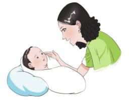
本页面依据《3岁以下婴幼儿健康养育照护指南（试行）》整理，面向家庭场景进行信息重排。重点突出日常照护、发育监测、营养喂养、交流玩耍和风险预防，便于连续阅读、打印留存与手册化使用。
养育照护的核心，不只是“照看”，而是在安全、稳定、回应性良好的环境中，支持婴幼儿的全面发展。
规律监测是发现问题、评估趋势和及时干预的基础。家庭可根据固定节点、关键指标和预警征象进行持续观察。
| 年龄段 | 检查月龄 |
|---|---|
| 1岁以内 | 出院后1周内、满月、3月龄、6月龄、8月龄、12月龄 |
| 1～3岁 | 18月龄、24月龄、30月龄、36月龄 |
使用生长发育监测图进行家庭自我监测。若体重、身长低于第3百分位或高于第97百分位，或生长速度明显平缓、下降或突增，应及时就诊。
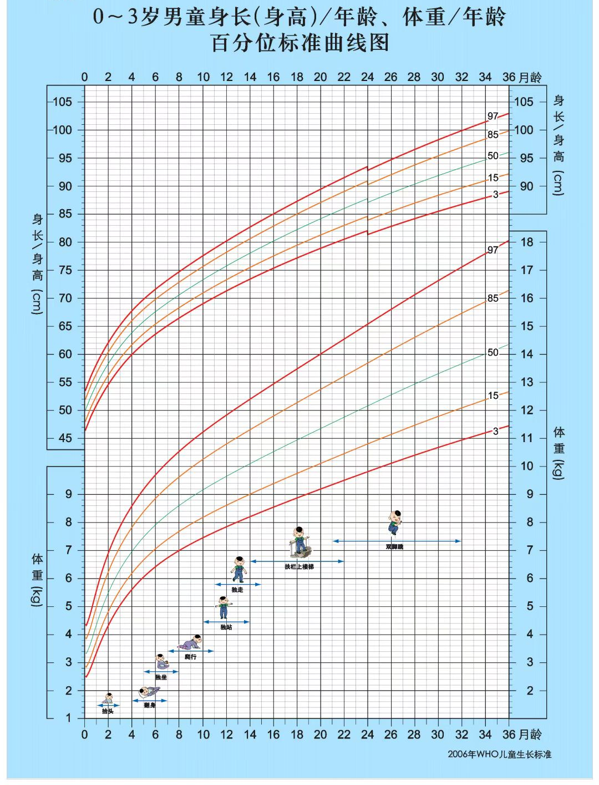
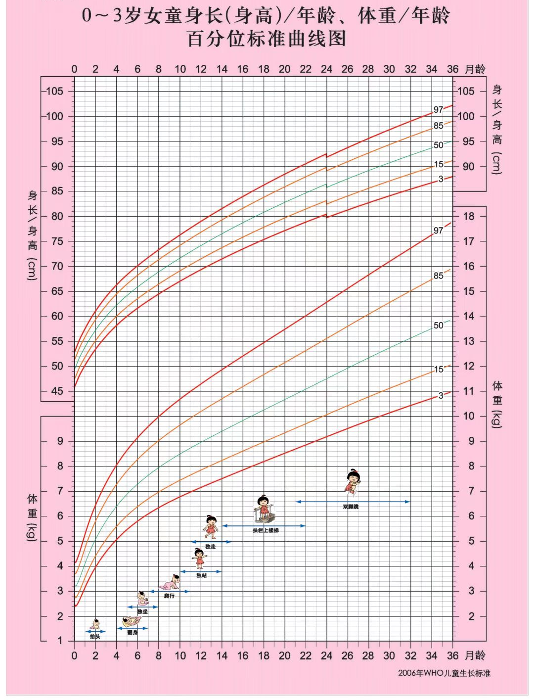
| 年龄 | 预警征象（任一条阳性提示发育偏异可能） |
|---|---|
| 3月 | 对很大声音没有反应；逗引时不发音或不会微笑；不注视人脸，不追视移动人或物品；俯卧时不会抬头。 |
| 6月 | 发音少，不会笑出声；不会伸手抓物；紧握拳松不开；不能扶坐。 |
| 8月 | 听到声音无应答；不会区分生人和熟人；双手间不会传递玩具；不会独坐。 |
| 12月 | 呼唤名字无反应；不会模仿“再见”或“欢迎”动作；不会用拇食指对捏小物品；不会扶物站立。 |
| 18月 | 不会有意识叫“爸爸”或“妈妈”；不会按要求指人或物；与人无目光交流；不会独走。 |
| 24月 | 不会说3个物品的名称；不会按吩咐做简单事情；不会用勺吃饭；不会扶栏上楼梯或台阶。 |
| 30月 | 不会说2～3个字的短语；兴趣单一、刻板；不会示意大小便；不会跑。 |
| 36月 | 不会说自己的名字；不会玩“拿棍当马骑”等假想游戏；不会模仿画圆；不会双脚跳。 |
| 4岁 | 不会说带形容词的句子；不能按要求等待或轮流；不会独立穿衣；不会单脚站立。 |
| 5岁 | 不能简单叙说事情经过；不知道自己的性别；不会用筷子吃饭；不会单脚跳。 |
| 6岁 | 不会表达自己的感受或想法；不会玩角色扮演的集体游戏；不会画方形；不会奔跑。 |
科学喂养强调顺应发育节律、保障营养密度，并通过稳定、愉快的进餐体验帮助婴幼儿形成长期健康的饮食习惯。
| 类型 | 维生素D（每天） | 铁剂 |
|---|---|---|
| 足月儿 | 生后数日起 400 IU/天 | 纯母乳喂养者 4～6 月龄酌情补铁 |
| 早产/低出生体重儿 | 生后数日起 800～1000 IU/天，3个月后改为 400 IU/天 | 生后2～4周起 2 mg/(kg·天) |
| 要点 | 说明 |
|---|---|
| 添加时间 | 足月儿6月龄起；早产儿校正胎龄4～6月龄时。 |
| 添加原则 | 每次只加一种新食物，由少到多、由一种到多种；从富含铁的泥糊状食物开始，每引入一种适应2～3天。 |
| 母乳延续 | 可继续母乳喂养至2岁及以上。 |
| 1岁以内 | 不加盐、糖和调味品，保持原味。 |
| 1岁以后 | 少盐、少糖。 |
| 月龄 | 频次（每天） | 每餐量 | 食物质地 |
|---|---|---|---|
| 6月龄起 | 从1次渐增至2次 | 从尝一尝渐增至2～3小勺 | 泥糊状（稠粥、肉泥、菜泥） |
| 6～9月龄 | 1～2次 | 2～3勺渐增至半碗（250ml碗） | 稠粥、糊糊、捣烂、煮烂的家庭食物 |
| 9～12月龄 | 2～3次 | 半碗 | 细细切碎的家庭食物、手指食物、条状食物 |
| 12～24月龄 | 3次正餐 + 2次加餐 | 3/4碗到1整碗 | 软烂的家庭食物 |
高质量互动是早期发展最重要的环境因素之一。身体接触、语言回应和共同玩耍，都是促进依恋、安全感和学习能力的关键路径。
| 方式 | 做法 |
|---|---|
| 身体接触 | 抚摸、拥抱等亲密接触，建立依恋。 |
| 肢体语言 | 通过眼神、表情、动作表达关注、喜爱、鼓励和安慰。 |
| 语言交流 | 从简单语音到单词、短语、完整语句，讲身边事物，讲故事、读绘本、唱儿歌。 |
不同月龄阶段的互动重点并不相同。可结合下列要点与示意图，在喂养、清醒陪伴、游戏和户外活动中自然开展交流与互动。
注视新生儿眼睛，温柔说话，尤其在哺乳和照护时，让其看脸、听声。
让其看、听，自由活动四肢；轻柔抚摸和怀抱，亲密皮肤接触更好。

喂奶或清醒时对其笑，模仿其声音说话交流。
看、听、接触养育人，自由活动四肢；帮助俯卧、抬头；用红球或圆环移动让其看、触摸。
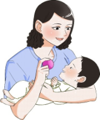
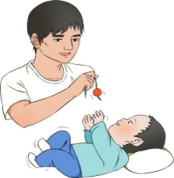
经常说话、逗笑，模仿其声音、表情和动作交流。
多俯卧、抬头，帮其翻身；让其伸手够、抓握玩具；可用不同质地的玩具。
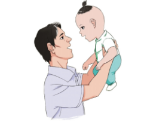
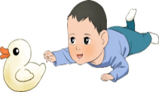
对其声音和兴趣给予回应，叫名字观察反应，玩“躲猫猫”，说看到的人或物品。
练习坐，床上翻滚；提供安全家庭物品让其抓握、传递、敲打。
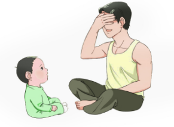
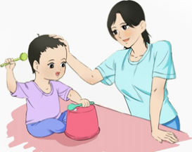
教认家中物品、人及身体部位；说话、唱歌、结合场景边说边做手势。
鼓励爬行、站立和扶走；练习拇食指捏小物品；把玩具放布下玩“藏猫猫”。
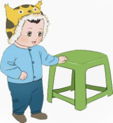
问简单问题，回应其说话；用简单指令调动活动，鼓励称呼周围的人，看物品和图片说出名称。
鼓励独自行走、蹲下和站起，握笔涂画；玩套叠杯、堆叠和容器拿放游戏。
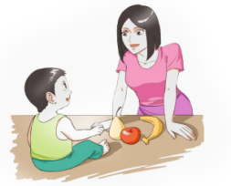
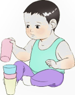
多说话，提问并耐心等待回答，用清晰正确发音回应；边看自然、图画书或物品边交谈。
多户外活动，扶支撑物上下台阶，扔球、踢球，翻书、拧瓶盖；玩模仿性游戏。
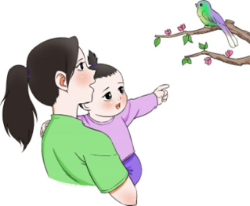
一起看图画书、讲故事、说儿歌，讨论图画书内容；教说姓名、性别，认识形状、颜色和用途。
练习单脚站、双脚蹦跳、踢球；培养洗手、吃饭、扣扣子、穿鞋等能力；与同伴玩简单群体游戏。
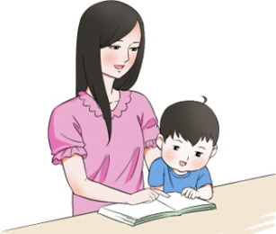
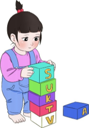
生活照护既包括卫生、睡眠、衣着等基础环节，也包括通过稳定节奏和温和引导帮助儿童建立安全感与自理能力。
学习摩腹、捏脊等常见推拿保健方法，对婴幼儿进行日常推拿保健。
| 要点 | 说明 |
|---|---|
| 环境 | 安静、空气新鲜，室温20℃～25℃；白天不过度遮光，夜晚睡后熄灯；卧室不放电视等视频类产品。 |
| 时长 | 婴儿期 12～17小时/天，幼儿期 10～14小时/天；夜间睡眠应达8小时以上。 |
| 入睡 | 培养自主入睡习惯，敏感识别睡眠信号，及时让其独立入睡；避免抱睡、摇睡、含乳头睡。 |
婴幼儿伤害预防的核心是“主动防范”，包括近距离看护、安全环境布置和照护者的应急能力建设。
对高危儿、营养性疾病、常见传染病和危重症信号的识别，决定了家庭照护能否及时转入专业医疗支持。
早产儿、低出生体重儿、有出生并发症的新生儿等，需及时就诊，并在医生指导下进行家庭干预和护理。
| 疾病 | 预防与处置 |
|---|---|
| 缺铁性贫血 | 6月龄起及时添加富含铁的食物；发生贫血按医嘱补充铁剂。 |
| 营养不良 | 合理添加辅食，保障能量、蛋白质等营养素；连续2次体重增长不良或营养改善3～6个月后身长仍增长不良者，需专科会诊。 |
| 维生素D缺乏性佝偻病 | 发病高峰3～18月龄；出生数日后即开始补维生素D，充分户外活动暴露身体部位；发生佝偻病按医嘱治疗。 |
常见传染病包括幼儿急疹、风疹、手足口病、水痘、流感等。